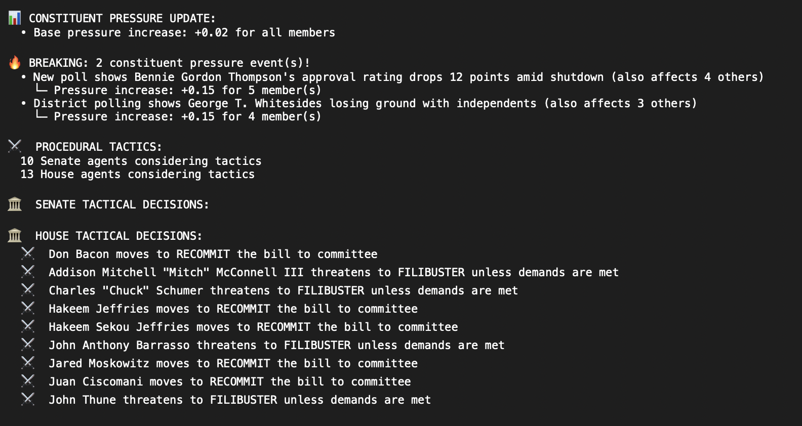
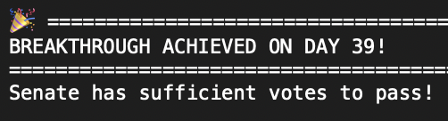

Government Shutdown Simulator
Version: US Government Shutdown 2025 Simulator
This document will take you through the very first inception of a debate simulation to a very technical and in depth government shutdown simulator.
Version 1: A debate between Chuck Schumer, Dick Cheney, and Donald Trump
The first simulation was a simple one between Chuck Schumer, Dick Cheney and Donald Trump, in which they debated AI regulation and policy. The debate started out pretty simple. The agents have been given a virtual debate "world" and the ability to think before they talk, allowing for coherent thoughts and discussions. The profiles of these politicians were taken from their online personalities: a collection of official news sources and their tweets, appearances on shows, etc..
In this version, the debate starts out with user prompts, and the agents remember their conversation history. In the following example, you can clearly see "Chuck" think about how to respond before


This particular version was to show that the agents have the ability to talk with each other and provide sensible responses. It is important to note that none of the agents are prompted about how to behave. They only know who they are, and how they have acted before.
Version 2: A simple government shutdown simulation.
This was created on October 23, the 23rd day of the shutdown
In this version, all 535 members of congress and (Donald Trump) were researched to the same depth as before. This alone was a technical challenge. After this research was consolidated, I set up a digital world for the members of congress to talk and debate in. This involves creating a separate "building" for the senate, and for the house of representatives. Additionally, I made a communal public space, in which the agents can talk to each other privately to encourage cross-chamber communication.
For this simulation, I needed to "set up"/initialize the simulated world. This proved to be another challenge. Having the agents know who they are is not enough, they also need to know where there are, and what is going on. Meaning, I had to create another agent to do research into the current government shutdown talks, what everyones stances are, what is happening outside of the government (external pressures), what is happening inside the government (possible alliances/tactics, etc).
Another technical issue which presented itself was that of timing. A computer does not perceive time as humans do, and so I needed to invent time in the simulated world. Since this was only version 2, I had an elegant first approach, which will be refined in later works. I scripted scenes in which the house and senate meet for a morning session, have a lunch break, then an afternoon session in which they discuss. Then, every day at the end, they have a vote on if they want to end the shutdown or not. This was obviously a flawed system to begin with, but shows interesting discussions. Below is the summary of the context of the virtual world.
The context was derived from news sources — an excellent source of up to date information. In order for me not to have to read a majority of the logs (which get awfully lengthy with so many agents), I had another agent make summaries of every day of the shutdown. One big issue I found (and then fixed), is that some of these simulation test runs were taking up almost 300Mb of data. Fortunately that was fixed easily. Below is a screenshot of the summary of day 30.
It is interesting to see the difference between public positions and private negotiations. Also important to note that on the day of this simulation, we had not yet reached day 30 in real life. Timing was of course something I had not yet properly implemented but even without a solid foundation of time, the agents in the simulation were successfully imitating the difficult of bringing his shutdown to an end.
What actually happened on day 30?
The United States federal government shutdown began at 12:01 a.m. EDT on October 1, 2025, after Congress failed to pass a continuing resolution (The Guardian). By Day 30, on October 30, 2025, the shutdown had entered its fifth week and become the longest in U.S. history (Reuters). The central point of contention remained the future of the enhanced premium subsidies under the Affordable Care Act (ACA), which Democrats insisted on extending and Republicans wanted to debate only after the government reopened (ABC News).
Publicly, Republicans continued to emphasize the need to reopen the government first, advocating a "clean" funding bill without additional policy riders. They accused Democrats of holding federal services hostage to force through healthcare subsidies. Democrats, meanwhile, maintained that any funding package must include an extension of the enhanced ACA subsidies, warning that failure to do so would raise premiums for millions of Americans. Both sides presented their positions as matters of principle, leading to a prolonged standoff that showed little sign of movement in the open.
The effects of the shutdown had become increasingly visible by late October. Federal programs such as Head Start faced critical funding cut-offs that threatened early childhood services for thousands of families (Reuters), and the Federal Bureau of Investigation reported that ongoing investigations were being delayed because of resource shortages (Reuters). Public frustration grew as hundreds of thousands of federal workers remained unpaid, and essential services continued to operate under strain.
Behind the scenes, however, there were tentative signs of movement. Several senators and moderate members from both parties began discussing limited off-ramps that could allow the government to reopen temporarily while broader negotiations continued. According to reporting at the time, Senate leadership and moderates acknowledged the possibility of temporary extensions of ACA subsidies as a face-saving compromise, though no concrete proposal had yet taken shape (Reuters). These back-channel talks reflected a pragmatic recognition that the impasse could not last indefinitely, even if both sides were reluctant to shift their public messaging.
So does this match what the simulation predicted?
Overall, the dynamics on Day 30 match the themes described in the simulation summary. The public divide between "reopen first" and "extend subsidies" reflected real-world rhetoric, and the centrality of ACA funding in the dispute was entirely accurate. Reports also support the notion of limited private willingness to compromise through short-term measures, even though specific figures such as a "three-to-six-month extension" were not formally agreed. The essential picture—deep partisan stalemate in public, small signs of pragmatism in private, and growing economic and social strain—accurately represents the situation at that stage of the 2025 shutdown.
So what was wrong with the simulation:
1. Overstated specificity of private agreements
Simulation claim: "Key leaders on both sides signal openness to a 3–6 month ACA subsidy extension as a face-saving compromise."
Reality: Reporting from late October 2025 confirmed that temporary subsidy extensions were discussed in concept, but no fixed duration (3–6 months) or concrete terms had been proposed or agreed by either party (Reuters, Nov 4 2025). The mention of specific timeframes appears to be a simulation extrapolation rather than something grounded in real negotiation records.
2. Over-personalized private negotiation dynamics
Simulation claim: "Leaders like McConnell, Schumer, and Jeffries propose pragmatic flexibility while maintaining their public stances."
Reality: Contemporary reports referred to unnamed moderates and a handful of Senate negotiators exploring compromises. There was no public or verified evidence that the top four congressional leaders were directly proposing such measures at that point. Most accounts indicate that senior leadership still held firm publicly and were authorizing exploratory talks rather than personally leading them (Reuters, Oct 30 2025).
3. Exaggerated bipartisan convergence
Simulation claim: "Both sides express openness to a short-term deal to end the stalemate."
Reality: While a few moderates and policy staff floated bridging proposals, official positions remained hardened on Day 30. Most statements from party leadership and official press briefings were still uncompromising (ABC News, Oct 21 2025). Any openness was confined to informal channels rather than an emerging bipartisan alignment.
4. Understated economic and administrative damage
Simulation omission: The summary focused heavily on negotiation tone but largely ignored the growing impact on federal workers, child-care programs, and law enforcement.
Reality: By Day 30, tens of thousands of children faced interruptions in Head Start programs, and FBI operations were being curtailed (Reuters, Oct 30 2025; Reuters, Oct 30 2025). These real-world consequences were a major part of media coverage but were absent from the simulation narrative.
5. Overly orderly framing of political behavior
Simulation tone: Presented a relatively calm, methodical sequence of public statements followed by private pragmatism.
Reality: The political atmosphere was much more chaotic and accusatory, with overlapping press conferences, social-media blame campaigns, and intense partisan rhetoric. The notion of an orderly transition from "public rigidity to private compromise" simplifies what was, in practice, a disorganized process with mixed signals from within both parties (The Guardian, Oct 1 2025).
Additionally, I extrapolated a thematic analysis of the entire logs done in the simulation. Its funny to see the "blame" category is much lower than others. For future projects, I will also analyze government debate transcripts to create a real life version of this chart as well. Sadly, that is out of the scope of the time frame I have to work on now.
One important thing to note though is that agents were being way to nice to each other…
Version 3: A more complicated government shutdown simulation.
This was created on November 3, the 34th day of the shutdown
In this addition, I had some upgrades I wanted to implement, and needed to fix some things from the old simulation. Mainly, the agents were being way to nice to each other. The system prompt for LLM's often is to be very helpful— which is not helpful in my case.
For this simulation, I added a few strategic fixes. Agents now have the ability to change their perspectives and views. Every day, republicans and democrats will have time set aside to negotiate and think of tactics. In addition, they have emotion states now, which are also dependent on other agents' actions
Also, with a predefined probability distribution, some random events van happen such as polling numbers or protests happening which put pressure on people from the government. The pressure is measured and put on the agents so they have an acknowledgement of the "real life" pressure they would be under. The tactical decisions are a framework under which the agent can choose to adopt the decision, and its personality profile will be updated accordingly.

With this new scenario testing, the simulation ended on day 39 (as of writing this report, we are on day 35). There are still many improvements to be made on this particular version, and there are some bugs I spotted in the code which I am currently fixing.
Version 4: Writing this currently
This was created on November 5th, the 36th day of the shutdown